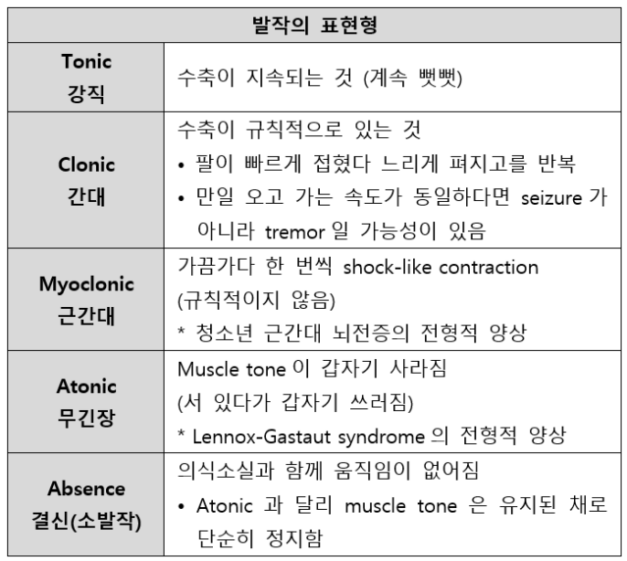

4. 경련
중요성: 경련은 뇌의 이상을 포함하는 다양한 원인에 의해 발생할 수 있으며 반복적인 경련은 뇌손상을 일으킬 수 있다. 따라서 진짜 경련인지, 간질성 경련인지 혹은 비간질성 경련인지 구별하고, 필요 시 신속히 조치를 취하는 것이 중요하다.
원인 | ||||
경련과 유사한 비경련 증상 | 실신, 뇌졸중, 일과성허혈발작, 저혈당 등 | |||
경련 | 간질성 경련 | 일차성 간질, 이차성 간질 등 | ||
| 비간질성 경련 | 대사 장애, 내분비 장애 등 | ||
평가목표 1) 병력청취, 신경진찰 및 신체진찰을 통하여 경련의 양상을 파악하여 적절한 진단 및 치료계획을 수립 2) 응급치료가 필요한 환자를 감별 | ||||
구체적인 성과 | ||||
병력 청취 | 경련 양상, 동반 증상 -> 진짜 경련 vs 경련 유사 증상 | [경련 양상] 1) 경련 전: 전조증상(불쾌, 답답, 치밀어오름, 메스꺼움, 구토, 눈 앞 깜깜, 팔다리 힘빠짐) 2) 경련 중: 의식/기억소실(부분 복합 경련), 팔다리(떨기, 뻣뻣, 양쪽/한쪽만), 눈/고개 돌아감, 혀 깨묾, 침흘림, 대소변 실금, 자동증(손으로 반복적 행동, 입맛 다시기) 3) 경련 후: 피곤, 혼란, 국소마비, 팔다리 근력저하 [경련 유사 증상] 1) 실신: 뇌혈류 감소로 인한 의식 소실. 근경련 X. 오래 서 있다가 쓰러짐 2) 일과성 허혈 발작: 일시적인 팔다리 힘빠짐, 의식저하 동반 3) 뇌졸중: 과거 편마비, 언어장애, 의식장애 병력 | ||
| 경련 유발인자 및 위험인자 확인 | 1) 유발인자: 수면박탈, 스트레스, 피로, 과음, 발열, 과호흡, 빛 자극 2) 위험인자: 열성경련 과거력/가족력, 외상성 뇌손상 | ||
신체 진찰 | 신경진찰 | 1) 뇌신경검사: 동공반사, 안구운동, 얼굴 감각/운동 2) 팔다리 감각/운동(경련 후 Todd’s palsy), DTR 3) 소뇌기능검사 i) Finger to nose test ii) Romberg test, Tandem gait 4) 수막자극징후 | ||
| 원인 감별을 위한 신체진찰 | 1) 두부외상 시진, 촉진 2) 눈: 결막(빈혈) 3) 구강: 탈수, 혀 깨문 흔적 | ||
진단 치료 | 원인감별/치료 | 1) 기본검사: 비디오 뇌파검사(EEG), 뇌 CT/MRI, (뇌수막염 의심 시) 뇌척수액검사 2) 치료: 항경련제 (부분발작 – carbamazepine / 전신 강직간대, 근간대 – valproate / 전신 결신(소발작) – ethosuximide) | ||
|
| 열성 경련 (1+1) | • 주로 전신강직간대발작(GTCS) – 뻣뻣 후 떪 • 15분 이내 • 상기도 감염 후 열 오르면서 발생 | 부모 안심, 해열제, 발열 원인질환 치료 |
|
| 영아연축 (1) | • 잠들 무렵/깰 때 갑작스런 근수축 (잭나이프) | ACTH, vigabatrin, steroid |
|
| 양성 롤란딕 뇌전증 | • 부분 발작 -> 전신화 가능 • 수면 중 한쪽 얼굴 발작, 입주위 떨림, 침흘림 • 15세 이후 대부분 저절로 소실 | Carbamazepine |
|
| 소아기 소발작 뇌전증 (1; 과호흡 증후군) | • 갑자기 5-10초간 멍해짐 • 과호흡에 의해 유발 가능 • 아주 경미한 자동증 | Ethosuximide, Valproate |
|
| 청소년 근간대 뇌전증 (2+1) | • 아침에 기상 시 상지의 근간대성 경련 (짧고 순간적인 근수축), 전신 강직간대발작 동반 • 유발요인: 음주, 수면박탈 • 평소 아침 기상 시 팔이 움찔하는 양상의 경련이 있던 젊은 환자가 과음한 다음날 아침 GTCS 발생 | Valproate |
|
| 측두엽 뇌전증 (3+1) (복합 부분 발작) | • 전조 증상(무언가 치밀어 오름) 🡪 복합부분발작(주변 인식 소실, 멍하니 🡪 발작 후 혼돈(post-ictal confusion) | Carbamazepine, Phenytoin, Valoroate -> 약물저항성 생기면 수술 |
|
| 외상성 뇌손상에 의한 뇌전증 (1+0) | • 두부 외상 과거력 | 항경련제, 수술적 치료 |
|
| 뇌수막염 (1+1) | • 두통, 발열, 감기증상, 구토, 경부강직 | 항생제 |
| 응급치료가 필요한 환자 감별/치료 | 1) 경련이 5분 이상 지속 or 의식 회복 없이 연이어 발생 2) 치료: 기도, 호흡, 순환 확보 후 ativan (lorazepam) 정맥주사 | ||
교육 | 응급조치 | |||

부분 발작(partial seizure) (국소 발작, focal seizure) : 한쪽 대뇌에 국한된 | 단순(simple) 부분 발작 (=의식장애 없음) |
| 복합(complex) 부분 발작 (=의식장애 있음) |
| 전신 강직간대 발작 |
전신 발작 (generalized seizure) : 발작이 뇌의 양쪽에서 | 결신 발작 (absence seizure) |
| 근간대 발작 (myoclonic seizure) |
| 무긴장 발작 (atonic seizure) |
[감별진단] 과호흡 증후군 추가하면 좋을듯?
뇌전증 (검사: 비다오 뇌파검사, 뇌 CT/MRI) | ||||||
| 호발 연령 | 발작 양상 | 유발요인 | 치료 | ||
열성 경련 (1+1) | 3개월~5세 | • 주로 전신강직간대발작(GTCS) • 15분 이내 | 상기도 감염 후 갑자기 열이 오르다가(>39oC) 발생 | 우선 부모 안심 + AAP 경련지속 🡪 BDZ | ||
영아연축 (1) | 3~9개월 | • 팔다리의 대칭적 짧은 수축 • 절하는 모양 • 움찔하며 놀라는 모양 | 보통 출면이나 입면 시 발생 | ACTH Corticosteroid Vigabatrin | ||
양성 롤란도 뇌전증 | 3~13세 | • 부분발작(얼굴 한쪽, 입 주위, • 발작 후 구음장애 나타나기도 • 15세 이후 대부분 저절로 소실 | • 주로 밤에 나타남: 잠든 직후/아침에 일어나기 1~2시간 전 | Carbamazepine Oxcarbazepine | ||
소아기 소발작 뇌전증 (1; 과호흡 증후군) | 6~7세 | • 갑자기 의식소실 🡪 곧 회복 후 하던 행동 지속 • 아주 경미한 자동증 | 과호흡 및 빛자극 | Ethosuximide Valproic acid | ||
청소년 근간대 뇌전증 (2+1) | 14~20세 | 주로 상지에서 근간대발작 • 숟가락, 컵을 떨어뜨림 | 수면박탈, 음주, 광감수성 | Valproic acid Levetiracetam Topiramate | ||
측두엽 뇌전증 (2+1) (복합 부분 발작) | 연령 다양 | 전조 증상(무언가 치밀어 오름) 🡪 발작(주변 인식 소실, 멍하니 🡪 발작 후 혼돈(post-ictal confusion) | * 조짐과 자동증 등의 전구증상은 복합 부분 발작의 특징 | Carbamazepine Phenytoin Valproate 🡪 약물 저항성시 수술 | ||
호흡중지발작 (뇌전증발작 유사 질환) | 2세 전후 | • 5세 이후에 자연히 소실, • 심하게 울다가 호흡중지 후 청색 | 주로 분노 등 감정 변화 * 별다른 검사 필요없음 | 부모를 안심시키고, | ||
비뇌전증 (두부외상에 의한 뇌전증 1) | ||||||
| 병력 | 검사 | 치료 및 교육 | |||
실신 | • 심박수 저하 • 저혈압 • 의식 소실 | 원인에 따른 검사 | 원인에 따른 치료 및 교육 | |||
뇌졸중 (주로 뇌출혈) | • 뇌졸중 발생 후 경련 • 과거 편마비/언어장애/의식장애 • 어지럼, 심한 두통, 시야 장애 | 뇌 CT/MRI | 입원하여 응급치료(뇌압조절, 혈압관리) [교육] 혈압 관리 | |||
일과성 허혈 발작 | • 24시간 내 완전히 증상이 없어 | 뇌 CT/MRI | 항응고제, 기저질환 관리(혈압 등) “평소 혈압이 높으셔서 이런 일을 다시 겪지 않게 하기 위해선 혈압을 잘 조절하는 이 중요합니다. 고혈압약도 드리겠습니다.” | |||
뇌종양 | • 두통, 시야이상, 체중감소 • 오심/구토, 팔다리 마비 | 뇌 CT 뇌 MRI | 수술 | |||
뇌수막염 (1+1) | • 최근 두통/발열/감기증상/고열 • 구토 피로감, 발열, 경부 강직 • 수막자극징후 | CSF tapping, 뇌 CT | Cefotaxime + vancomycin | |||
저혈당 | • 기운없음, 몸떨림, 식은땀, 현기증 | 혈당검사 | 당 공급(경구/수액) | |||
뇌의 신경세포들이 일시적으로 비정상적인 전기를 과하게 내뿜으면서, 뇌 기능이 잠시 멈추고 사지에 경련을 일으키며 쓰러지신 겁니다
O | 언제부터 어떤 상황 (열이 펄펄 열성경련 / 심하게 울기 / 꾸중 듣기 / 잠에서 깰 때 / 서 있다가) | |
L | 어디에서 경련? (장소) -> (넘어졌다면) 다친 곳 | |
D | 몇 분 (or 몇 초) 여러 번 / 얼마나 자주 | |
Co | 점점 더 심해지나요? | |
Ex | 이전에도? (이전과 다른 점 있었나요?) / 항경련제 치료를 받고 있나요? | |
C | [경련 전] 발작 전 전조증상 - 불쾌한 느낌 / 가슴 답답 / 치밀어 오름 / 메스꺼움, 구토 / 눈 앞 깜깜 / 팔다리 힘 빠짐 [경련 중] - 의식: 의식을 잃었나요? 얼마 동안 의식을 잃었나요? <의식 있음: 단순부분발작/없음: 복합부분, 전신강직간대, 전신결신발작> - 기억: 당시 상황이 어디까지 기억나세요? <복합부분발작 - 기억 안 남> - 목격자: 목격자가 있나요? -> 어떤 모습으로 발작? ① 손발은 어땠나요? (팔다리 떨기 / 뻣뻣 / 양쪽 or 한쪽 팔다리) ② 눈, 고개 돌아감 / 혀 깨묾 / 침흘림 / 대소변 실금 - 자동증: 손으로 반복적인 행동 / 입맛 다시기 <복합부분발작> [경련 후] 경련 후 증상 (피곤/혼란/국소마비/팔다리 근력저하) | |
F | [소아기 소발작] 숨을 몰아 쉬거나(과호흡) 과도한 빛 자극 이후에 발작을 했나요? * 과호흡(빠르고 깊은 호흡)하는 것을 직접 보여주면 좋음 [청소년 근간대] 수면박탈 / 피로 / 스트레스 / 과음 [수면 관련] -[양성롤란딕] 자는 중 -[영아연축] 잠에서 깰때/들때. 암기법: 수박과자피폭(수면/수면박탈/과호흡/빛자극/피로/폭음) | |
A | 전신/호흡/신경/정신 [열성경련/뇌수막염] 고열 / 최근 감기증상 (기침, 가래, 콧물) / (+ 두통/구토 – 뇌수막염) [뇌졸중/뇌종양] 두통 / 시야 이상 / 보행장애 / 언어장애 [정신] 우울 / 불안 / 수면장애 | |
E | 이전 건강 검진 | |
외 | [외상] 발작을 하다 다치진 않으셨나요? / 이전에 머리 다친 적 r/o 외상성 뇌손상에 의한 뇌전증 [수술] 머리 수술 받으신 적 있으세요? | |
과 | 열성 경련 / + 성인 – 고혈압, 당뇨, 뇌졸중, 뇌종양 | |
약 | 복용 중인 약 | |
사 | 술담커/ 경련 전 폭음 / 직업 * 잠깐의 경련이라도 위험할 수 있는 직업(ex. 파일럿)이라면 바로 약물치료 하도록 교육 | |
가 | [소아] 열성 경련 가족력 비슷한 증상 / 뇌전증 | |
여 | LMP / 월경 주기 / 임신 가능성 | |
소아 | * 소아의 경우 신체검진 없으므로 과거력, 사회력, 가족력에서 추가 병력청취 진행 (다 물어볼 필요는 X) 암기법: 주검발사 [주산기] 제태주수/분만방법/산전진찰 결과/임신 중 엽산, 철분제 복용/임신 중 or 출생 직후 문제(신생아 황달 등) [검사] 대사이상검사 / 청력검사 / 선천기형 [성장발달] 현재 키, 체중 / 태어났을 때 키, 체중 / 발달 문제 없는지 / [과거력] 자라면서 크게 아픈 적 (CNS 감염, 중이염) / 예방접종 (생백신)>>> [사회력] 주 양육자 / 영양, 식사 / 학교, 유치원에서 적응 예방접종 0-4w :햅비햅비 베이비(HepB, BCG) 1m : 햅비 베이비(HepB) 2m : 패러디폴힘(폐렴구균, 로타, DTaP, 폴리오, 헤모필러스) 4m : 패러디폴힘 6m : 햅비패러디폴힘 12m : MR,일수두(MMR,일본뇌염,수두), 푸하하(폴리, 폐렴구균, HepA, 헤모필러스) 24m : 일본 갈 애(일본뇌염, HepA)
| |
추가로 해주실 말씀 있으실까요? | ||
P/Ex | V/S 확인 | 혈압-맥박-호흡-체온 |
| 얼굴 | • 두부 외상(시진/촉진) • 눈: 빈혈 • 입: 탈수, 혀 깨문 흔적 • 사지: 피부긴장도 / 오목부종 |
| 신경 | 1. 뇌신경검사: 동공 반사 / 안구 운동 / 얼굴 감각 / 얼굴 운동 2. 소뇌기능검사: finger to nose test, rapid alternating movement “일어나 보세요.” 🡪 Romberg test (넘어지지 않도록 잡아드리겠습니다.) (눈 감으면 흔들림 -> 양성 / 소뇌 문제 시 눈 안 감아도 흔들림 -> 음성) Tandem gait “침대까지 걸어가 보실게요. 한쪽 발 앞에 다른 발 뒤꿈치가 오도록 걸어보세요.” 3. 침대에 걸터앉아서 팔다리 감각/운동(Todd’s palsy = 경련 후 일시적, 국소적 근력약화) + DTR 4. 침대에 눕혀서 수막자극징후 |
교육 | 공통 | [검사, 치료] 정확한 진단을 위해 비디오 뇌파검사(입원 필요 24hr)/ 뇌파검사(1hr), 뇌 CT, 뇌척수액검사(유두부종 시 금기)가 필요합니다. 검사로 ~가 확진되면 우선 항경련제를 이용해 치료하게 됩니다. 약의 효과를 판단하고 경련의 재발을 방지하기 위해 최소 2년 이상 꾸준히 복용해주시는 것이 중요합니다.
[응급] 혹시라도 발작이 5분 이상 지속되거나 발작이 의식 회복 없이 연이어 발생할 경우 응급 상황이므로 반드시 병원으로 오시기 바랍니다.
[외상] 발작하면서 넘어지며 외상을 입는 것이 가장 위험하기 때문에 발작이 생기면 주변 사람들이 물건을 치우거나 안전한 곳에 눕히는 것이 중요합니다. 뇌전증 발작 시 환자 입에 손을 넣지 않도록 하고, 환자가 다치지 않도록 안전한 곳으로 옮기고 억지로 교정하지 말도록 보호자에게 설명
[회피] 유발요인 회피: 발작은 음주, 스트레스, 잠을 못 자는 것에 의해 유발될 수 있으므로 무리하지 말고 충분히 휴식을 취하세요.
[가임기 여성] 항경련제 중 임신 중에 사용하면 안 되는 것들이 있기 때문에 임신 가능성이 있거나 계획 중이시라면 의사와 꼭 상의해야 합니다. |
| 발작불가직업 | (기사, 파일럿, 아나운서 등) 바로 약물 치료가 필요함을 안내 |
| 열성경련 | 합병증이 적고, 7세 이후 자연소실 되는 좋은 예후이므로 안심 but, 재발 가능! |